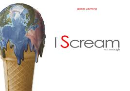

OUR EARTH - DEAD OR ALIVE |
||||
| Home | Climate Change | Plastic Segregation | Geographical Representation | About |
|
Earth, the planet that sustains all known life, is, today, in danger. Our planet has suffered years upon years of decay and damage. Indiscriminate use of fossil fuels has resulted in much loss of tree cover over the years and has left the Earth barren. Many causes are believed to be the reason for rapid change in ecological balance and change in climatic conditions over a period. Though some reasons are totally natural, most of the factors mentioned here are, in some way, the result of the various human activities. Here are some of the main causes:
It is our duty as the ones who caused such damage to repair it. This would involve a number of measures; which is the main motive for the creation of this site. Please read through the content to get a sense of how serious a disaster is staring us in the face and what we, as common citizens, can do. Temperature - Related Impacts

Warmer average temperatures will lead to hotter days and more frequent and longer heat waves. These changes will lead to an increase in heat-related deaths in the United States - reaching as much as thousands to tens of thousands of additional deaths each year by the end of the century during summer months. A large number of countries stare at a similar fate, with poorer countries being more vulnerable. Exposure to extreme heat can lead to heat stroke and dehydration, as well as cardiovascular, respiratory, and cerebrovascular disease. Excessive heat is more likely to affect populations in northern latitudes where people are less prepared to cope with excessive temperatures. Certain types of populations are more vulnerable than others: for example, outdoor workers, student athletes, and homeless people tend to be more exposed to extreme heat because they spend more time outdoors. Low-income households and older adults may lack access to air conditioning which also increases exposure to extreme heat. Additionally, young children, pregnant women, older adults, and people with certain medical conditions are less able to regulate their body temperature and can therefore be more vulnerable to extreme heat. Increases in OzoneScientists project that warmer temperatures from climate change will increase the frequency of days with unhealthy levels of ground-level ozone, a harmful air pollutant, and a component in smog.
Impacts from Extreme Weather Events
|